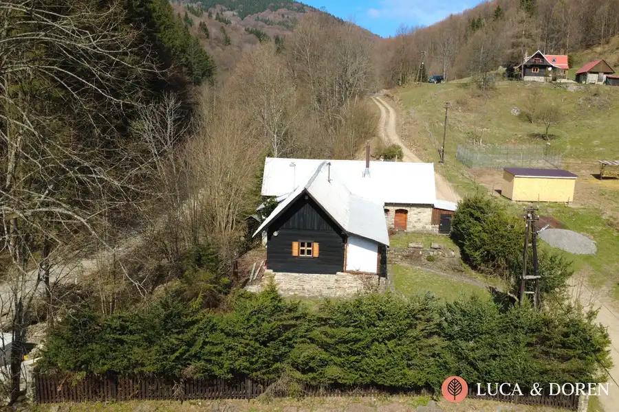
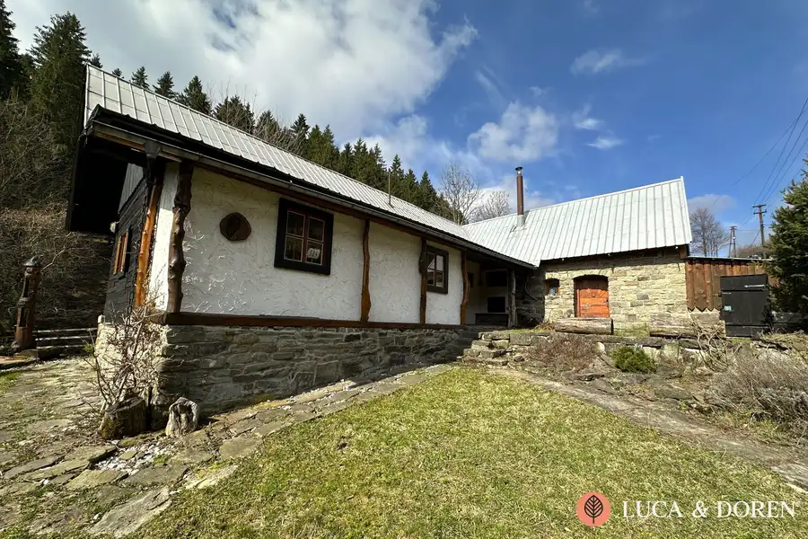
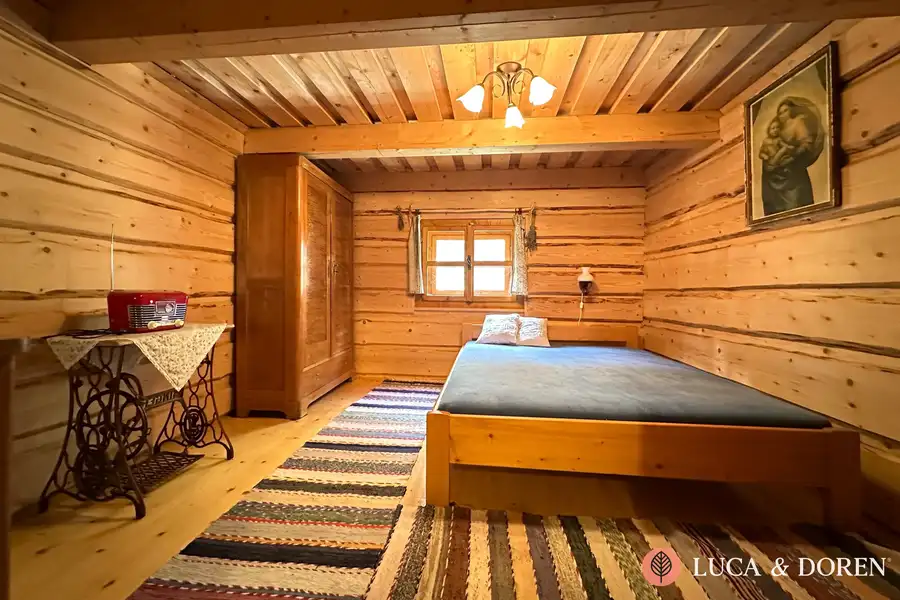
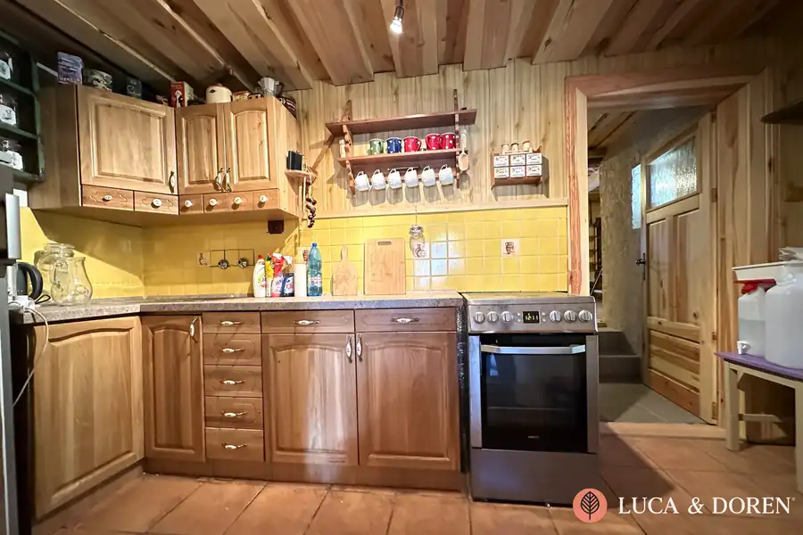
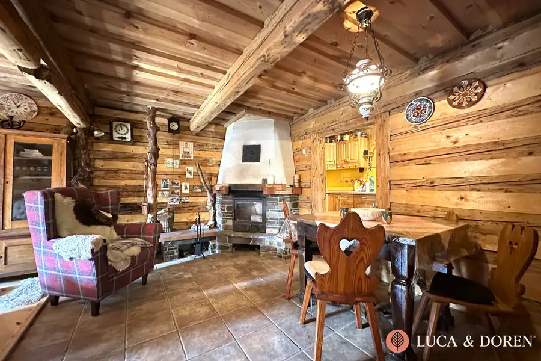
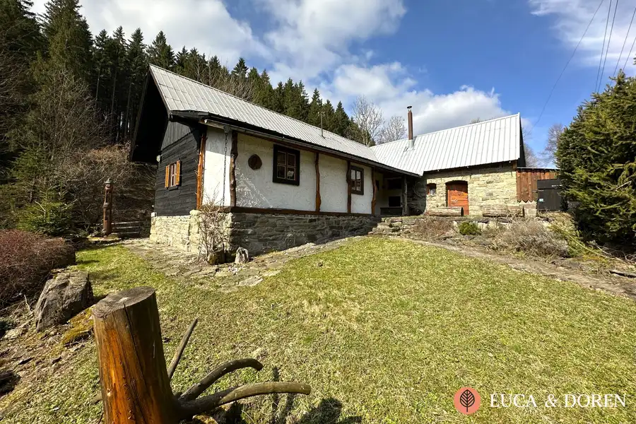

LUCA & DOREN | Na prenájom | Drevenica | Horná Mariková | Charizmatická chata po kompletnej rekonštrukcií
Horná Mariková







- Plocha80 m²
- StavKompletná rekonštrukcia
- Energetická triedaG
O nehnuteľnosti
Luca & Doren vám ponúka na prenájom romantickú drevenicu po kompletnej rekonštrukcií obklopenú panenskou prírodou v Hornej Marikovej. Nájdite svoju oázu pokoja pod lesom, pri šepote vtákov a horského potôčika.Túžite po drevenici, ale nie ste si istí kúpou? Vyskúšajte najskôr dlhodobý prenájom! Dom prešiel kompletnou rekonštrukciou a ponúka dostatok priestoru a komfortu na Vaše víkendové úteky od stresu a povinností! Rozloha drevenice je približne 100 m2. Dispozične chata pozostáva zo vstupnej verandy, priestrannej obývačky s jedálňou, kuchyne, kúpeľne so sprchou a dvomi spálňami. Dom sa prenajíma kompletne zariadený. Je napojený na elektrinu, voda (úžitková) je riešená prostredníctvom studne. V kúpeľni je chemické WC, vonku sa nachádza suché WC. O teplo sa stará krb a piecka, ktoré dopĺňajú elektrické ohrievače. Teplú vodu zabezpečuje elektrický bojler. Pre oddych tela je pripravená fínska sauna, ktorú nájdete v nádhernej kamennej časti domu. Na pozemku veľkom 532 m2 nájdete aj miesto na posedenie, ohnisko a trávnik, kde môžete umiestniť napríklad vírivku. V prípade záujmu je možné po dohode využívať ďalších 200 - 1000 m2 pozemku. Prístup k chate je po asfaltovej obecnej ceste, posledných 200 m je štrková cesta. V okolí nájdete aj veľa možností na rekreáciu, turistiku, športovanie či hubárčenie. Priamo v obci máte obchod aj reštaurácie - Eva-Mária, Resort Mravec s wellnessom. V zime Vás určite poteší možnosť lyžovania v neďalekej SKI Ráztoka 7 km. Po náročných aktivitách si môžete dopriať relax v kúpeľoch Nimnica (15 km).Diaľnica D1 je vzdialená 20 km, Považská Bystrica 20 km, Púchov 22 km, Žilina 50 km, Bratislava 180 km. Hľadáme slušného, spoľahlivého nájomcu, ktorý sa bude starať o túto chatu s úctou a rešpektom.OBJEKT NIE JE URČENÝ NA TRVALÉ BÝVANIE.Mesačný nájom: 450 Eur (vrátane energií)Vratný depozit: 3x 450 Eur = 1350 EurIng. Michal MišovecLuca & Doren s. r. o.Tel: +421 904 887 338E-mail: misovec@lucadoren.skUvedená cena je konečná, nenavyšuje sa o odmenu sprostredkovateľa. V cene je zahrnuté aj vyhotovenie nájomných zmlúv.
Parametre
- Bezpečnosť
- Alarm
- Druh
- Chata, drevenica, zrub
- Dátum zverejnenia
- 16. 04. 2026
- Energetický certifikát budovy
- G
- Orientácia
- Východná, Juhovýchodná, Južná, Juhozápadná, Západná
- Plocha pozemku
- 532 m²
- Počet izieb / miestností
- 3
- Počet kúpeľní
- 1
- Počet nadzemných podlaží
- 1
- Počet spální
- 2
- Počet vonkajších parkovacích miest
- 2
- Prístupová komunikácia
- Asfaltová, Štrková
- Rok výstavby
- 1900
- Stav nehnuteľnosti
- Kompletná rekonštrukcia
- Terén pozemku
- Mierne svahovitý
- Typ
- Prenájom
- Typ konštrukcie
- Drevená
- Vybavenie
- Vonkajšie parkovacie miesto, Vyhradené parkovanie, Záhrada, Sauna, Krb
- Vybavenie objektu
- Zariadený so spotrebičmi
- Vykurovanie
- Krb, Žiariče
- Zastavaná plocha
- 100 m²
- Zdroj tepla
- Uhlie alebo drevo
- Úžitková plocha
- 80 m²
Kde to je


Mohlo by Vás zaujímať
 DomNové
369 000 €LUCA & DOREN | Na predaj | Rodinný dom | Trenčianska Teplá | Dve podlažia + pivnica
Trenčianska Teplá
300 m²
DomNové
369 000 €LUCA & DOREN | Na predaj | Rodinný dom | Trenčianska Teplá | Dve podlažia + pivnica
Trenčianska Teplá
300 m²
 DomNové
254 900 €LUCA & DOREN | Rodinný dom s krásnou záhradou | 7 km od Trenčína | Stačí sa nasťahovať!
Trenčianske Stankovce
102 m²
DomNové
254 900 €LUCA & DOREN | Rodinný dom s krásnou záhradou | 7 km od Trenčína | Stačí sa nasťahovať!
Trenčianske Stankovce
102 m²
 PozemokNové
Cena na vyžádáníLUCA & DOREN | Na predaj | Pozemok | Medové Lúky | 2 261 m | | Projekt RD + Stavebné povolenie
Nová Dubnica
2261 m²
PozemokNové
Cena na vyžádáníLUCA & DOREN | Na predaj | Pozemok | Medové Lúky | 2 261 m | | Projekt RD + Stavebné povolenie
Nová Dubnica
2261 m²